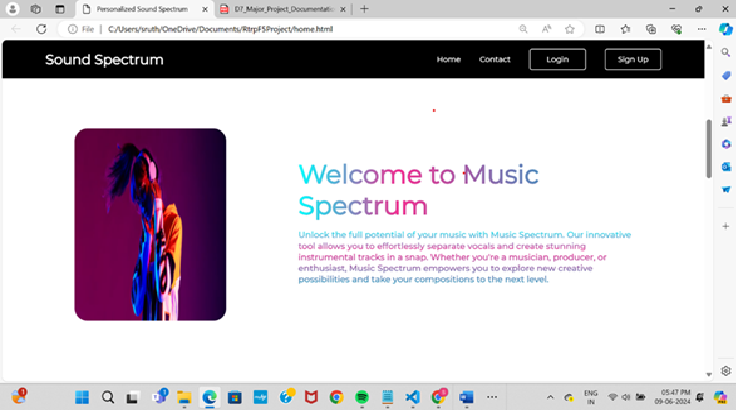
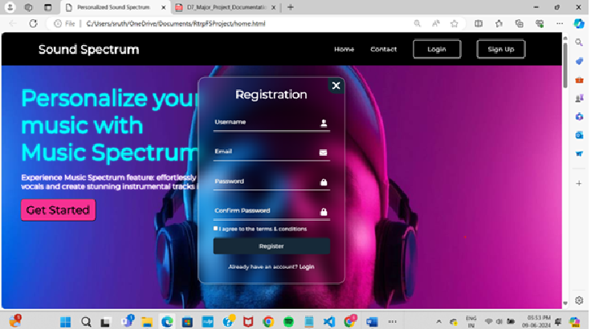

COMPUTER SCIENCE AND ENGINEERING GRADUATE
Hello, I'm Bathini Rupa Venkata Laxmi
As a recent Computer Science and Engineering graduate, I have a strong interest in programming and software development. Through my academic projects, I have gained practical experience and strengthened my problem-solving and teamwork skills. I am eager to begin my professional career in the IT industry, apply my technical knowledge to real-world projects, and continue learning from experienced professionals.
SOFTWARE ENGINEER | JAVA DEVELOPER | WEB DEVELOPER | ENTRY-LEVEL IT ROLES
Explore My Projects Contact MeAbout Me
I am a Computer Science and Engineering graduate from Gokaraju Rangaraju Institute of Engineering and Technology with a CGPA of 9.02. I have a strong foundation in Java and academic knowledge of OOP, SQL, DBMS, HTML, CSS, Artificial Intelligence, and Machine Learning. As part of my academic journey, I developed a major project titled "AI-Based Facial Recognition for Smart Access Control and Identity Validation," which helped me strengthen my technical knowledge, problem-solving abilities, and teamwork skills. I am a quick learner, self-motivated, and enthusiastic about exploring new technologies. I look forward to applying my skills to real-world projects, contributing to an organization, and growing as a software professional in the IT industry.
Technical Skills
Technologies and concepts I have studied and practised.
Programming
Java, Python, JavaScript
Database
SQL, DBMS
Web Technologies
HTML, CSS
Core Concepts
Data Structures, OOPS, AI, Machine Learning, Problem Solving
Tools
Visual Studio Code, Canva, GitHub
Languages Known
English, Telugu
My Projects
Academic projects where I applied my technical knowledge.

AI-Based Facial Recognition for Smart Access Control and Identity Validation
Developed an AI-based facial recognition system for smart access control and identity validation. The project focuses on identifying and verifying individuals using facial recognition technology to automate identity checks and manage access for authorized users. It aims to improve the efficiency of identity verification and support a smarter, more secure access control process.
View Project on GitHub →
Data Visualization and Model Prediction for Analytical Data Using Python
Developed a Python-based project for data visualization and model prediction to analyze data and identify patterns and trends. The project presents data through charts and graphs and uses machine learning techniques to predict results, helping make complex data easier to understand and supporting better decision-making.
View Project on GitHub →
Personalized Sound Spectrum
Developed a project to analyze sound and represent audio signals through visual spectrum patterns. The project focuses on displaying sound frequencies visually to help users understand audio characteristics more easily.
View Project on GitHub →My Resume
View my resume to learn more about my education, technical skills, and project experience.
View My ResumeContact Me
Email: rupavenkatalaxmisrinivasb@gmail.com
GitHub: My GitHub Profile
LinkedIn: Connect with me